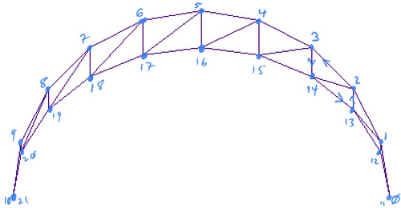
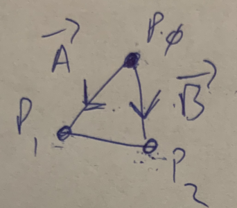

Chapter 7 Polygons
Currently, our basic unit of drawing is a line. When we create a shape, we add edges to an edge matrix, and we loop through that matrix drawing lines. A 3D shape rendered using edges only has no real surface to speak of. Instead, it is a wire-frame model 1 . Wire-frame models can be rendered quickly, but because they lack true surface, there are limits to how realistic they can look.
If we change our basic unit of drawing form a line to a polygon, we will have surfaces to work with, generating a polygon mesh 2 . Having a surface gives us more options when rendering 3D objects. Most notably:
- Polygons can be filled with colors, creating solid objects.
- We can describe polygons as "facing" a particular direction, and use that information to determine sides of our 3D shapes that are facing away from the viewer and should therefore not be rendered.
- We can also use the direction a polygon is facing to help calculate real-world lighting and shading values.
There are many possible shapes we could use as our basic polygons, we will use triangles, as they are the simplest polygon.
Section 7.1 Polygon Lists
Our current shapes are all based on _edge lists_, where every 2 points determine a distinct edge to be drawn. We should keep this framework around in order to draw 2 dimensional shapes when desired. We need to add polygon lists, where every 3 points determine a distinct triangle. Here is a chart comparing the functions in our 2D, edge based, drawing stack and their 3D, polygon based, equivalents. Table 7.1.
By adding the points in counter-clockwise order, we will be able to eventually determine what is forwards and backwards with respect to the triangle. This will help us implement more advanced features later.
| Edge Framework | Polygon Framework |
|---|---|
add_pointAdd a point to the edge list |
add_pointAdd a point to the polygon list |
add_edgeAdd the endpoints of a line to the edge list. |
add_polygonAdd the three vertices of a triangle into the polygon list. The vertices must be added incounter-clockwise order. |
draw_linesGo through the edge list 2 points at a time, drawing a line between each pair of points. |
draw_polygonsGo through the polygon list 3 points at a time, connecting the points to draw a triangle. Other polygon features can be added here later. |
Section 7.2 Polygon Based Shapes
Subsection 7.2.1 Box
A box has 6 faces, each one made up of 2 triangles. Like before, the easiest thing to do here is add your 12 triangles directly into the polygon list. The order of the triangles does not matter, but the order of the points does. Points should always be added counter-clockwise.
Subsection 7.2.2 Sphere
We generate spheres by drawing a series of rotated semi-circles. If you followed my advice, you should have a separate
generate_sphere function that returns a matrix of points for the sphere. Our job now is to go through that list of points, adding triples of points representing the triangles on the surface of the sphere to our polygon list. The best thing to do is physically draw the first two semicircles generated by your code, and write out what triangles are required. 
When drawing semi-circles, you need to generate the poles, which are created when
t=0 and t=1, respectively. This is different from drawing full circles, you don’t need to include t=1 there because the point at t=1 is identical to the point at t=0.The way my loops are written, this means when I set steps to 10 I actually get 11 points per semi-circle.It is also important to keep track of the direction your semi-circles are drawn in. If you used the example from class (semi-circles rotated about the x-axis), then each new semi-circle is drawn in front of/below the previous one. Here are some of the triangles taken from the diagram above:
0: p0, p1, p12
1: p1, p2, p13
2: p1, p13, p12
At the poles, there is only one triangle to add per section, this is triangle 0 above. Otherwise, triangles are added in pairs, as is shown by triangles 1 and 2. If
n is the number of points in a semi-circle, then we can define the triangles for the non-poles as:
p, p + 1, (p + n) + 1
p, (p + n) + 1, p + n
At the poles, we need to make sure not to add both triangles. Following the above formulae, at
p=0, we would have triangles 0, 1, 12 and 0, 12, 11. But for the second triangle, 0 and 11 are the same point. This would render as a straight line, which might not seem like a big deal, but having these "degenerate" triangles at the poles will cause problems down the line, so it’s best to exclude them now.Subsection 7.2.3 Torus
Torus creation is very similar to the sphere, with a couple of changes.
- Tori must be generated with full circles.
- No 2 circles of a torus share any common points, which means we don’t have poles. This actually makes it easier to code since we don’t have those special cases.
- The tori from class are generated by rotating about the y-axis. This means that each new circle is drawn behind the previous one.
As with the sphere, it is advised that you draw out the first two slices of torus to map out the appropriate triangles.
Section 7.3 Vectors
A vector 3 is a unit that has both direction and magnitude (size). Vectors are written like so: \(\lt x, y, z>\) Notice that vector components are placed inside \(\lt >\) to differentiate them from points. A point only describes a single point in space, whereas a vector describes a relationship between 2 points (often, not always, an arbitrary point and the origin)
You can think of a vector as describing how you would get from point \(A\) to point \(B\text{.}\) For example, consider the following two points:
\begin{equation*}
\begin{aligned}
p0 \amp= (4, 10, 0) \\
p1 \amp= (6, 5, 23) \\
\end{aligned}
\end{equation*}
To get from \(p0\) to \(p1\text{,}\) you would have to move +2 in x, -5 in y and +23 in z, so we would write the vector as:
\begin{equation*}
\overrightarrow{A} = \lt 2, -5, 23>
\end{equation*}
The vector from \(p1\) to \(p0\) moves in the opposite direction, and would be written as:
\begin{equation*}
\overrightarrow{B} = \lt -2, 5, -23>
\end{equation*}
Generally, you can find the vector between 2 points by subtraction. Notationally, vectors are written with a \(\rightarrow\) as seen above.
Section 7.4 Backface Culling
As mentioend before, backface culling is the process of removing the backwards facing surfaces from our rendering engine. In order to do this, we need to define 2 vectors:
- \(\overrightarrow{N}\text{:}\) The surface normal, a vector perpendicular to the plane of the polygon (or surface), pointing outward.
- \(\overrightarrow{V}\text{:}\) The view vector, a vector pointing out from the plane of the polygon (or surface) into the "eye" of the observer.

- Calculate \(\overrightarrow{N}\)
- Calculate \(\theta\)
- IF \(-90 \lt \theta \lt 90\text{,}\) draw the triangle.
Subsection 7.4.1 Calculate \(\overrightarrow{N}\)
We can find the surface normal by taking the cross product of two vectors along the edges of the polygon provided that they share one endpoint and point in opposite directions. If we have a trainlge like this:

\(\overrightarrow{A}\) is the vector from \(P_0\) to \(P_1\) and \(\overrightarrow{B}\) is the vector from \(P_0\) to \(P_2\text{.}\) We can get the cross procuct like this:
\begin{equation*}
\begin{aligned}
\overrightarrow{A} \amp= P_1 - P_0 = \lt x_1 - x_0, y_1 - y_0, z_1 - z_0> \\
\overrightarrow{B} \amp= P_2 - P_0 = \lt x_2 - x_0, y_2 - y_0, z_2 - z_0> \\
\overrightarrow{N} \amp= \overrightarrow{A} \times \overrightarrow{B} \\
\overrightarrow{N} \amp= \lt a_yb_z - a_zb_y, a_zb_x - a_xb_z, a_xb_y - a_yb_x>
\end{aligned}
\end{equation*}
Subsection 7.4.2 Calculate \(\theta\)
Before we figure out \(\theta\text{,}\) we need to discuss the view vector (\(\overrightarrow{V}\)). \(\overrightarrow{V}\) is supposed to be a vector that comes out of the plane of a surface and into the observer’s eye. So the question is, what is the relationship between the observer and the surface?
For right now, we will assume that the observer is very very very far away from the object. This assumption means that moving left, right, up or down will not have any perceptible effect on what part of the object you are looking at. Think about looking up at the moon, if you move around, you don’t start to see a new part of the moon. It looks the same, even if you went from Staten Island up to the Bronx, the moon would look the same. Programatically, this means that we can ignore any changes along the x or y axes.
So z is the important axis, since that determines if you are in front of or behind an object. Remember that z moves in a positive direction out from the screen towards the viewer, so \(\overrightarrow{V}\text{,}\) the vector from the object to the viewer, should have a positive z component. For right now we can use \(\overrightarrow{V} = \lt 0, 0, 1>\) for the following reasons:
- We don’t care about changes in x and y, so leaving them at 0 is fine.
- We need a positive z.
- By giving z the value of 1, the total mangnitude of \(\overrightarrow{V}\) is 1. This is referred to as a \(normalized\) vector. It’s not very important right now, but it will be later on, so we might as well start here.
Now that we know both \(\overrightarrow{N}\) and \(\overrightarrow{V}\text{,}\) there’s a little bit of vector math we can use to our advantage to help us find \(\theta\text{.}\) The dot prduct 4 of \(\overrightarrow{N}\) and \(\overrightarrow{V}\) is a scalar (not a vector) value equal to the cosine of the angle between them times the product of each vector’s magnitude (\(M\)). Or, more succintly: \(\overrightarrow{N} \cdot \overrightarrow{V} = Mcos\theta\text{.}\) Given two vectors, you can calculate the dot product like so:
\begin{equation*}
\overrightarrow{N} \cdot \overrightarrow{V} = Mcos\theta = n_xv_x + n_yv_y + n_zv_z
\end{equation*}
There are properties of \(cos\theta\text{,}\) that can help us out a lot. Namely, \(cos\theta > 0\) when \(-90 \lt \theta \lt 90\) which is conveniently, exactly the range for surfaces we want to see. So it turns out, we only care about whether or not the dot product is positive or negative. If it’s positive, then the surface is front facing, and we should draw it, if it’s negative, we pass. And since mangnitude is always positive, we don’t actually need to worry about it for this calculation (later on, when we get to lighting, we will care about mangnitude, but that’s a problem for future us, who will be smarter than present us).
Subsection 7.4.3 Putting it all together
Given any triangle starting at \(P_0\text{:}\)
- Calculate \(\overrightarrow{N} = \overrightarrow{A} \times \overrightarrow{B}\text{,}\) where \(\overrightarrow{A} = P_1 - P_0\text{,}\) and \(\overrightarrow{B} = P_2 - P_0\text{.}\)
- Calculate \(\overrightarrow{N} \cdot \overrightarrow{V}\text{,}\) where \(\overrightarrow{V} = \lt 0, 0, 1>\)
- If \(\overrightarrow{N} \cdot \overrightarrow{V} > 0\text{,}\) draw the triangle.